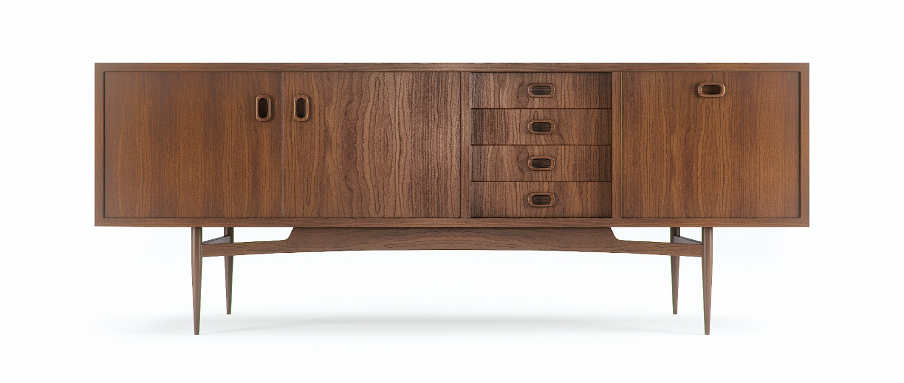

Fall Trend Alert
Market Trends
If you’ve ever wondered where the trends originate that you see when you shop for your home, it all starts at market. Biannually, every April and October, several members of the home furnishings industry gathers for the High Point Market where the latest looks and introductions make their debut. From sofas, chairs and tables to bedroom furniture, recliners, lamps and accessories, if it’s for the home, it was introduced in High Point, N.C.
Color Connects
There’s always a color story at market, and this year blue continued to dominate. Shades of cobalt, peacock and deep, saturated ocean hues were omnipresent in textiles, leathers and accents.
“We’re seeing every hue of blue mixed with greens like mint green, cypress and even forest green,” says Sandi Teague, vice president of Hooker Upholstery. As notable as the dominance of blue was the prominence of color in general. From sofas to lamps, color this market was bold and intense–and popping up in unexpected places.
In a nod to the trend of chalk-painting vintage furnishings in bright colors, the Fifth Anniversary Edition of Hooker Furniture’s Sanctuary Collection offered a colorful twist on its best-selling Windsor dining chairs, above.
If red is not your style, these fashionable Sanctuary dining chairs are also available in shades of blue, cream, black and wood tones. In my own home, I’d love to use the cream for guest chairs and the blue for the host chairs for a pop of color at the head and foot of the table.
A look at the Sam Moore Furniture showroom display at furniture market illustrates how colorful upholstery choices are hot right now. The Euphoria wing chair is front and center and features an oil-on-canvas look in mid-tone citrus, red and green hues.
- Citrus Orange
- Ruby Red
- Turquoise is another popular hue
- Emerald accents are common with this palette
These colors are extremely popular and will work for almost any space. They are modern, yet classic, and they are sure to stay in style for a long time.
What’s Old is New
Drawing upon the past for inspiration, many of today’s hottest designs give a nod to timeless shapes and forms. New interpretations of classic styles can be seen in introductions for every room of the home.
Designed for the vinyl record revival led by young music enthusiasts, Hooker’s new Studio 7H Record Player Console and Gaming Console Combines Mid-Century Modern flair with cutting-edge electronics management. The true beauty of these retro-inspired beauties is their focus on functionality. Furniture designers have taken the best of the best in design and paired it with features that function for today’s lifestyles to create the ultimate combination of vintage and modern.
Graphics are Inspiring
Supporting the color story at market is an emphasis on pattern and graphics. Bold shapes and lines are making waves with a focus on scale–both oversized and miniature. In pattern, “We’re seeing some modern and fresh versions of flame stitches and Greek keys, as well as updated mini-patterns,” explains Hooker’s Teague.
This Greek Key Console is a new introduction from Hooker’s Melange Collection. An over-scaled interpretation of the timeless Greek key motif, it features a bold, saturated shade of cobalt blue and soft, gold-tone trim and hardware.